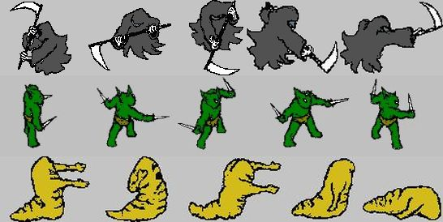

The PK Girl
Interactive fiction with mystery, sci-fi, and romance themes. Requires ADRIFT Runner 4.0...or used to.
The SCARE interpreter at ifarchive.org seems the best hope of getting it to run today, but sans art, music, and map.
Game download (release 4) from ifarchive.org
Game download (release 4) from ifarchive.org
Author note:
I look back on this project with equal parts pride and embarrassment. (not really equal parts)
First released in 2002

Three Monkeys One Cage
A short bit of puzzle-solving interactive fiction with no graphics whatsoever and a masochistic level of difficulty. You'd hate it for sure. As with the above, SCARE, a working interpreter for Adrift 4.0, is needed to run the game.
Game download from ifarchive.org
Game download from ifarchive.org
Author note:
Yeah, it was much too difficult.
First released in 2003
Not available

Goblin Maze
Top-down action adventure in the style of The Legend of Zelda. Probably there is no browser that can run this java applet today.
Author note:
Remains one game for which I did all the artwork myself.
BONUS